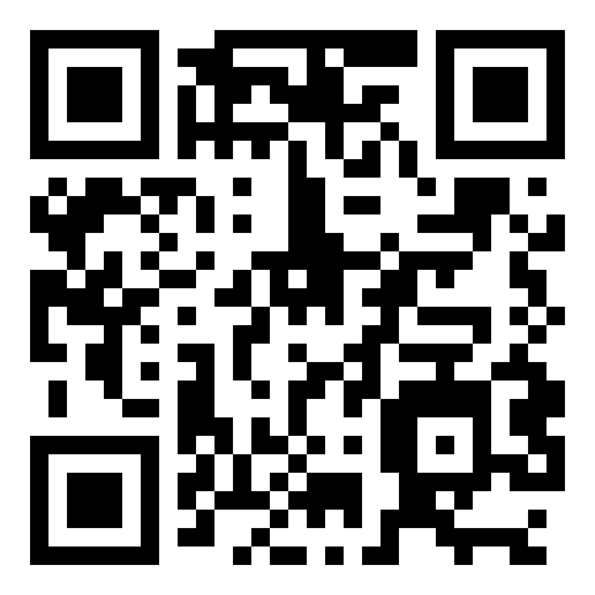

About Me
Morgan Freeman is an American actor, film director, and narrator. He was born on June 1, 1937, in Memphis, Tennessee. Freeman began his acting career on the stage before making his debut in the 1971 film "Who Says I Can't Ride a Rainbow!"
Throughout his illustrious career, Freeman has become one of the most respected and acclaimed actors in Hollywood. He is known for his distinct voice and commanding presence on screen.
Freeman has appeared in a wide range of films, earning critical acclaim and numerous awards for his performances. Some of his most notable films include "The Shawshank Redemption," "Se7en," "Million Dollar Baby," "Driving Miss Daisy," and "Invictus."
Aside from acting, Freeman is also an accomplished narrator, lending his voice to documentaries, commercials, and audiobooks. His deep, resonant voice has become iconic in its own right.
Freeman's contributions to the film industry have earned him numerous awards, including an Academy Award for Best Supporting Actor for his role in "Million Dollar Baby" and a Golden Globe Award for Best Actor for his portrayal of Nelson Mandela in "Invictus."
My Photos
My Playlist
Like
QR Code
SPA Q&A
Three main differences between Web 1.0, Web 2.0, and Web 3.0
- Web 1.0 (Static): Web 1.0 was the initial stage of the World Wide Web, where websites were primarily static and read-only. Users could only consume the content provided by website owners, with limited interaction or collaboration.
- Web 2.0 (Interactive): Web 2.0 marked the transition to a more interactive and user-centric web, where users could actively contribute, collaborate, and share content. Social media, blogs, wikis, and user-generated content became prevalent.
- Web 3.0 (Semantic): Web 3.0, also known as the Semantic Web, aims to make web data more machine-readable and understandable, enabling better integration, interoperability, and intelligent data processing. It focuses on decentralization, blockchain technology, and the concept of a more open and trustless internet.
For example, a simple search query in Web 1.0 would display static, pre-defined results, while in Web 3.0, the search could leverage semantic data and AI to provide more personalized, contextualized, and intelligent results based on the user's intent and preferences.